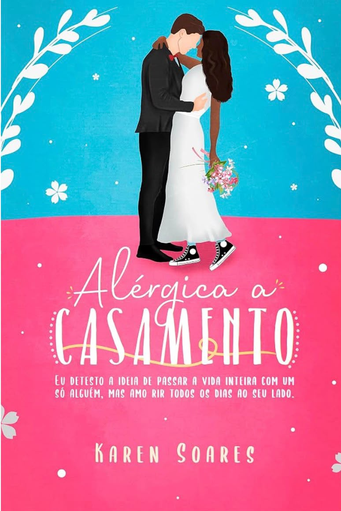
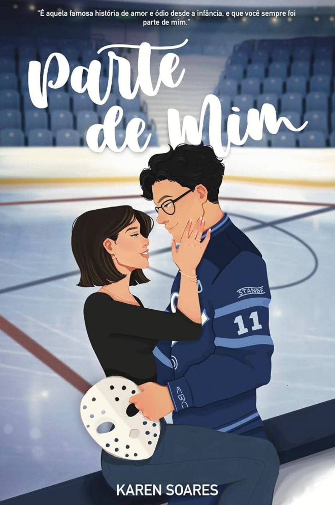

Alérgica a Casamento
Fake Dating
Estranhos para Amantes
Cidade Pequena
Uma comédia romântica que trata com bom humor e algumas doses de drama dois desconhecidos se apaixonando. — Fake Date — Uma cidade fofoqueira — Um boy Swifitie — Estranhos para amantes.
Maria Lúcia sempre detestou festas de casamento. Depois de oito anos namorando o homem perfeito, idolatrado por toda a cidade extremamente religiosa, Malu se vê obrigada a recusar seu pedido de casamento diante de todos, enquanto uma alergia misteriosa faz sua língua inchar e a faz desmaiar.
Enquanto tenta juntar os pedaços do seu coração partido, Maria Lúcia recebe uma proposta inusitada: participar de um experimento onde terá que fingir um relacionamento com um rapaz que ela nunca viu antes. Bernardo, três anos mais novo que ela, tem muito a ensiná-la.
Bernardo Castro carrega consigo o peso do luto, uma obsessão por álcool e a luta contra o preconceito devido à sua bissexualidade. Esse programa parece ser a oportunidade perfeita para ele fugir dessa cidade fanática religiosa e enfrentar seus próprios traumas, mas Malu promete virar sua vida de cabeça para baixo.
Gatilhos:— Dependência emocional — Abandono parental — alcoolismo — Relacionamento tóxico — Mommy Issues — Narcisismo.
Comprar na Amazon

Parte de Mim
Enemies to Lovers
Hóquei
Grumpy x Sunshine
Gracie Calloway e Alec Fletcher têm uma história de rivalidade que começou na infância, alimentada por competições, provocações e sentimentos não resolvidos. Gracie, uma apaixonada por hóquei que transforma sua paixão em um podcast universitário, se vê inesperadamente envolvida no mistério de um jogador mascarado que domina as partidas do time da universidade. Enquanto isso, Alec, seu maior inimigo, está tentando escapar do peso de ser filho de uma lenda do hóquei. Quando segredos são revelados, sentimentos antigos e novos colidem, forçando-os a confrontar não apenas o passado, mas também o que realmente sentem um pelo outro. Uma história de rivalidade, redenção e amor em meio ao hóquei.
Comprar na Amazon

As Mentiras de Nathan Davis
Fake Dating
Basquete
Grumpy x Sunshine
Nathan Davis é o astro do basquete da Universidade de São Francisco. Bom, ele era. Até um acidente antes do verão, uma lesão grave e uma hierarquia inteira prestes a ruir, já que tudo que ele construiu não existe mais, inclusive, a sua popularidade.
Certo de que conseguirá tudo que quer de volta, Nathan começa um plano mirabolante para reaver a braçadeira de capitão, seus amigos e sua fama. Ele só não contava que teria que pedir ajuda da líder do jornal da USF, Olivia Hastings.
Olivia Hastings odeia jogadores de basquete, pois um deles já quebrou o seu coração. Tutora, herdeira e uma jornalista afiadíssima, ela se vê ajudando um cara que odeia, mas que acaba encontrando particularidades inimagináveis com ela.
Um acordo é feito, um plano é criado e muitos favores são cobrados.
Comprar na Amazon

Cada Dia Que Te Amei
Friends to Lovers
Slow Burn
Found Family
Lola Jones sempre viveu à margem, tanto de sua própria vida quanto nas sombras de sua timidez. Enquanto as garotas ao seu redor se apaixonam facilmente e encontram conforto nos braços de alguém, Lola se esconde, com medo de se machucar. Até que Wes Miller cruza seu caminho – o típico badboy tatuado jogador de basquete e de poucas palavras e misterioso que ninguém ousa perguntar quem é de fato.
Criado em uma família desestruturada e com um passado que quase o destruiu, Wes só sabe viver no limite, esperando o momento em que tudo à sua volta desmorone.
Quando Lola e Wes se aproximam, ambos são arrastados para um plano maluco de fazer com que a garota se sinta mais confortável com outros garotos, mas o que fazer quando se perceber que talvez ele queira ser o unico garoto de Lola Jones?
Lola tenta desvendar o enigma que é Wes, enquanto ele luta contra os próprios demônios e o medo de machucar aqueles que ama. Eles poderão encontrar uma maneira de construir algo real em meio ao caos? Ou os segredos de Wes destruirão qualquer chance de felicidade que eles possam ter?
Em uma história de redenção, vulnerabilidade e segundas chances, "Cada Dia que Eu te Amei" nos leva a um romance onde o amor pode curar – ou quebrar de vez os corações que tenta salvar.
Comprar na Amazon